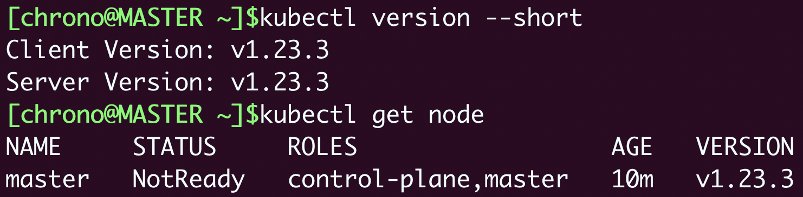

- 00 开篇词 迎难而上，做云原生时代的弄潮儿.md
- 00 课前准备 动手实践才是最好的学习方式.md
- 01 初识容器：万事开头难.md
- 02 被隔离的进程：一起来看看容器的本质.md
- 03 容器化的应用：会了这些你就是Docker高手.md
- 04 创建容器镜像：如何编写正确、高效的Dockerfile.md
- 05 镜像仓库：该怎样用好Docker Hub这个宝藏.md
- 06 打破次元壁：容器该如何与外界互联互通.md
- 07 实战演练：玩转Docker.md
- 08 视频：入门篇实操总结.md
- 09 走近云原生：如何在本机搭建小巧完备的Kubernetes环境.md
- 10 自动化的运维管理：探究Kubernetes工作机制的奥秘.md
- 11 YAML：Kubernetes世界里的通用语.md
- 12 Pod：如何理解这个Kubernetes里最核心的概念？.md
- 13 Job_CronJob：为什么不直接用Pod来处理业务？.md
- 14 ConfigMap_Secret：怎样配置、定制我的应用.md
- 15 实战演练：玩转Kubernetes（1）.md
- 16 视频：初级篇实操总结.md
- 17 更真实的云原生：实际搭建多节点的Kubernetes集群.md
- 18 Deployment：让应用永不宕机.md
- 19 Daemonset：忠实可靠的看门狗.md
- 20 Service：微服务架构的应对之道.md
- 21 Ingress：集群进出流量的总管.md
- 22 实战演练：玩转Kubernetes（2）.md
- 23 视频：中级篇实操总结.md
- 24 PersistentVolume：怎么解决数据持久化的难题？.md
- 25 PersistentVolume + NFS：怎么使用网络共享存储？.md
- 26 StatefulSet：怎么管理有状态的应用？.md
- 27 滚动更新：如何做到平滑的应用升级降级？.md
- 28 应用保障：如何让Pod运行得更健康？.md
- 29 集群管理：如何用名字空间分隔系统资源？.md
- 30 系统监控：如何使用Metrics Server和Prometheus？.md
- 31 网络通信：CNI是怎么回事？又是怎么工作的？.md
- 32 实战演练：玩转Kubernetes（3）.md
- 33 视频：高级篇实操总结.md
- 加餐 docker-compose：单机环境下的容器编排工具.md
- 加餐 谈谈Kong Ingress Controller.md
- 结束语 是终点，更是起点.md
17 更真实的云原生：实际搭建多节点的Kubernetes集群
你好，我是Chrono。
到今天，你学习这个专栏的进度就已经过半了，在前面的“入门篇”我们了解了Docker和容器技术，在“初级篇”我们掌握了Kubernetes的基本对象、原理和操作方法，一路走下来收获很多。
现在你应该对Kubernetes和容器编排有了一些初步的认识，那么接下来，让我们继续深入研究Kubernetes的其他API对象，也就是那些在Docker中不存在的但对云计算、集群管理至关重要的概念。
不过在那之前，我们还需要有一个比minikube更真实的Kubernetes环境，它应该是一个多节点的Kubernetes集群，这样更贴近现实中的生产系统，能够让我们尽快地拥有实际的集群使用经验。
所以在今天的这节课里，我们就来暂时忘掉minikube，改用kubeadm（https://kubernetes.io/zh/docs/reference/setup-tools/kubeadm/）搭建出一个新的Kubernetes集群，一起来看看更真实的云原生环境。
什么是kubeadm
前面的几节课里我们使用的都是minikube，它非常简单易用，不需要什么配置工作，就能够在单机环境里创建出一个功能完善的Kubernetes集群，给学习、开发、测试都带来了极大的便利。
不过minikube还是太“迷你”了，方便的同时也隐藏了很多细节，离真正生产环境里的计算集群有一些差距，毕竟许多需求、任务只有在多节点的大集群里才能够遇到，相比起来，minikube真的只能算是一个“玩具”。
那么，多节点的Kubernetes集群是怎么从无到有地创建出来的呢？
[第10讲]说过Kubernetes是很多模块构成的，而实现核心功能的组件像apiserver、etcd、scheduler等本质上都是可执行文件，所以也可以采用和其他系统差不多的方式，使用Shell脚本或者Ansible等工具打包发布到服务器上。
不过Kubernetes里的这些组件的配置和相互关系实在是太复杂了，用Shell、Ansible来部署的难度很高，需要具有相当专业的运维管理知识才能配置、搭建好集群，而且即使这样，搭建的过程也非常麻烦。
为了简化Kubernetes的部署工作，让它能够更“接地气”，社区里就出现了一个专门用来在集群中安装Kubernetes的工具，名字就叫“kubeadm”，意思就是“Kubernetes管理员”。
kubeadm，原理和minikube类似，也是用容器和镜像来封装Kubernetes的各种组件，但它的目标不是单机部署，而是要能够轻松地在集群环境里部署Kubernetes，并且让这个集群接近甚至达到生产级质量。
而在保持这个高水准的同时，kubeadm还具有了和minikube一样的易用性，只要很少的几条命令，如 init、join、upgrade、reset 就能够完成Kubernetes集群的管理维护工作，这让它不仅适用于集群管理员，也适用于开发、测试人员。
实验环境的架构是什么样的
在使用kubeadm搭建实验环境之前，我们先来看看集群的架构设计，也就是说要准备好集群所需的硬件设施。
这里我画了一张系统架构图，图里一共有3台主机，当然它们都是使用虚拟机软件VirtualBox/VMWare虚拟出来的，下面我来详细说明一下：

所谓的多节点集群，要求服务器应该有两台或者更多，为了简化我们只取最小值，所以这个Kubernetes集群就只有两台主机，一台是Master节点，另一台是Worker节点。当然，在完全掌握了kubeadm的用法之后，你可以在这个集群里添加更多的节点。
Master节点需要运行apiserver、etcd、scheduler、controller-manager等组件，管理整个集群，所以对配置要求比较高，至少是2核CPU、4GB的内存。
而Worker节点没有管理工作，只运行业务应用，所以配置可以低一些，为了节省资源我给它分配了1核CPU和1GB的内存，可以说是低到不能再低了。

基于模拟生产环境的考虑，在Kubernetes集群之外还需要有一台起辅助作用的服务器。
它的名字叫Console，意思是控制台，我们要在上面安装命令行工具kubectl，所有对Kubernetes集群的管理命令都是从这台主机发出去的。这也比较符合实际情况，因为安全的原因，集群里的主机部署好之后应该尽量少直接登录上去操作。
要提醒你的是，Console这台主机只是逻辑上的概念，不一定要是独立，你在实际安装部署的时候完全可以复用之前minikube的虚拟机，或者直接使用Master/Worker节点作为控制台。
这3台主机共同组成了我们的实验环境，所以在配置的时候要注意它们的网络选项，必须是在同一个网段，你可以再回顾一下[课前准备]，保证它们使用的是同一个“Host-Only”（VirtualBox）或者“自定”（VMWare Fusion）网络。
安装前的准备工作
不过有了架构图里的这些主机之后，我们还不能立即开始使用kubeadm安装Kubernetes，因为Kubernetes对系统有一些特殊要求，我们必须还要在Master和Worker节点上做一些准备。
这些工作的详细信息你都可以在Kubernetes的官网上找到，但它们分散在不同的文档里，比较凌乱，所以我把它们整合到了这里，包括改主机名、改Docker配置、改网络设置、改交换分区这四步。
第一，由于Kubernetes使用主机名来区分集群里的节点，所以每个节点的hostname必须不能重名。你需要修改“/etc/hostname”这个文件，把它改成容易辨识的名字，比如Master节点就叫 master，Worker节点就叫 worker：
sudo vi /etc/hostname
第二，虽然Kubernetes目前支持多种容器运行时，但Docker还是最方便最易用的一种，所以我们仍然继续使用Docker作为Kubernetes的底层支持，使用 apt 安装Docker Engine（可参考[第1讲]）。
安装完成后需要你再对Docker的配置做一点修改，在“/etc/docker/daemon.json”里把cgroup的驱动程序改成 systemd ，然后重启Docker的守护进程，具体的操作我列在了下面：
cat <<EOF | sudo tee /etc/docker/daemon.json
{
"exec-opts": ["native.cgroupdriver=systemd"],
"log-driver": "json-file",
"log-opts": {
"max-size": "100m"
},
"storage-driver": "overlay2"
}
EOF
sudo systemctl enable docker
sudo systemctl daemon-reload
sudo systemctl restart docker
第三，为了让Kubernetes能够检查、转发网络流量，你需要修改iptables的配置，启用“br_netfilter”模块：
cat <<EOF | sudo tee /etc/modules-load.d/k8s.conf
br_netfilter
EOF
cat <<EOF | sudo tee /etc/sysctl.d/k8s.conf
net.bridge.bridge-nf-call-ip6tables = 1
net.bridge.bridge-nf-call-iptables = 1
net.ipv4.ip_forward=1 # better than modify /etc/sysctl.conf
EOF
sudo sysctl --system
第四，你需要修改“/etc/fstab”，关闭Linux的swap分区，提升Kubernetes的性能：
sudo swapoff -a
sudo sed -ri '/\sswap\s/s/^#?/#/' /etc/fstab
完成之后，最好记得重启一下系统，然后给虚拟机拍个快照做备份，避免后续的操作失误导致重复劳动。
安装kubeadm
好，现在我们就要安装kubeadm了，在Master节点和Worker节点上都要做这一步。
kubeadm可以直接从Google自己的软件仓库下载安装，但国内的网络不稳定，很难下载成功，需要改用其他的软件源，这里我选择了国内的某云厂商：
sudo apt install -y apt-transport-https ca-certificates curl
curl https://mirrors.aliyun.com/kubernetes/apt/doc/apt-key.gpg | sudo apt-key add -
cat <<EOF | sudo tee /etc/apt/sources.list.d/kubernetes.list
deb https://mirrors.aliyun.com/kubernetes/apt/ kubernetes-xenial main
EOF
sudo apt update
更新了软件仓库，我们就可以用 apt install 获取kubeadm、kubelet和kubectl这三个安装必备工具了。apt默认会下载最新版本，但我们也可以指定版本号，比如使用和minikube相同的“1.23.3”：
sudo apt install -y kubeadm=1.23.3-00 kubelet=1.23.3-00 kubectl=1.23.3-00
安装完成之后，你可以用 kubeadm version、kubectl version 来验证版本是否正确：
kubeadm version
kubectl version --client
另外按照Kubernetes官网的要求，我们最好再使用命令 apt-mark hold ，锁定这三个软件的版本，避免意外升级导致版本错误：
sudo apt-mark hold kubeadm kubelet kubectl
下载Kubernetes组件镜像
前面我说过，kubeadm把apiserver、etcd、scheduler等组件都打包成了镜像，以容器的方式启动Kubernetes，但这些镜像不是放在Docker Hub上，而是放在Google自己的镜像仓库网站gcr.io，而它在国内的访问很困难，直接拉取镜像几乎是不可能的。
所以我们需要采取一些变通措施，提前把镜像下载到本地。
使用命令 kubeadm config images list 可以查看安装Kubernetes所需的镜像列表，参数 --kubernetes-version 可以指定版本号：
kubeadm config images list --kubernetes-version v1.23.3
k8s.gcr.io/kube-apiserver:v1.23.3
k8s.gcr.io/kube-controller-manager:v1.23.3
k8s.gcr.io/kube-scheduler:v1.23.3
k8s.gcr.io/kube-proxy:v1.23.3
k8s.gcr.io/pause:3.6
k8s.gcr.io/etcd:3.5.1-0
k8s.gcr.io/coredns/coredns:v1.8.6
知道了镜像的名字和标签就好办了，我们有两种方法可以比较容易地获取这些镜像。
第一种方法是利用minikube。因为minikube本身也打包了Kubernetes的组件镜像，所以完全可以从它的节点里把这些镜像导出之后再拷贝过来。
具体做法也很简单，先启动minikube，然后 minikube ssh 登录进虚拟节点，用 docker save -o 命令把相应版本的镜像都保存下来，再用 minikube cp 拷贝到本地，剩下的事情就不用我多说了：
这种方法安全可靠，不过操作上麻烦了些，所以就有了第二种方法，从国内的镜像网站下载然后再用 docker tag 改名，能够使用Shell编程实现自动化：
repo=registry.aliyuncs.com/google_containers
for name in `kubeadm config images list --kubernetes-version v1.23.3`; do
src_name=${name#k8s.gcr.io/}
src_name=${src_name#coredns/}
docker pull $repo/$src_name
docker tag $repo/$src_name $name
docker rmi $repo/$src_name
done
第二种方法速度快，但也有隐患，万一网站不提供服务，或者改动了镜像就比较危险了。
所以你可以把这两种方法结合起来，先用脚本从国内镜像仓库下载，然后再用minikube里的镜像做对比，只要IMAGE ID是一样就说明镜像是正确的。
这张截图就是Kubernetes 1.23.3的镜像列表（amd64/arm64），你在安装时可以参考：


安装Master节点
准备工作都做好了，现在就可以开始正式安装Kubernetes了，我们先从Master节点开始。
kubeadm的用法非常简单，只需要一个命令 kubeadm init 就可以把组件在Master节点上运行起来，不过它还有很多参数用来调整集群的配置，你可以用 -h 查看。这里我只说一下我们实验环境用到的3个参数：
- --pod-network-cidr，设置集群里Pod的IP地址段。
- --apiserver-advertise-address，设置apiserver的IP地址，对于多网卡服务器来说很重要（比如VirtualBox虚拟机就用了两块网卡），可以指定apiserver在哪个网卡上对外提供服务。
- --kubernetes-version，指定Kubernetes的版本号。
下面的这个安装命令里，我指定了Pod的地址段是“10.10.0.0/16”，apiserver的服务地址是“192.168.10.210”，Kubernetes的版本号是“1.23.3”：
sudo kubeadm init \
--pod-network-cidr=10.10.0.0/16 \
--apiserver-advertise-address=192.168.10.210 \
--kubernetes-version=v1.23.3
因为我们已经提前把镜像下载到了本地，所以kubeadm的安装过程很快就完成了，它还会提示出接下来要做的工作：
To start using your cluster, you need to run the following as a regular user:
mkdir -p $HOME/.kube
sudo cp -i /etc/kubernetes/admin.conf $HOME/.kube/config
sudo chown $(id -u):$(id -g) $HOME/.kube/config
意思是要在本地建立一个“.kube”目录，然后拷贝kubectl的配置文件，你只要原样拷贝粘贴就行。
另外还有一个很重要的“kubeadm join”提示，其他节点要加入集群必须要用指令里的token和ca证书，所以这条命令务必拷贝后保存好：
Then you can join any number of worker nodes by running the following on each as root:
kubeadm join 192.168.10.210:6443 --token tv9mkx.tw7it9vphe158e74 \
--discovery-token-ca-cert-hash sha256:e8721b8630d5b562e23c010c70559a6d3084f629abad6a2920e87855f8fb96f3
安装完成后，你就可以使用 kubectl version、kubectl get node 来检查Kubernetes的版本和集群的节点状态了：
kubectl version
kubectl get node

你会注意到Master节点的状态是“NotReady”，这是由于还缺少网络插件，集群的内部网络还没有正常运作。
安装Flannel网络插件
Kubernetes定义了CNI标准，有很多网络插件，这里我选择最常用的Flannel，可以在它的GitHub仓库里（https://github.com/flannel-io/flannel/）找到相关文档。
它安装也很简单，只需要使用项目的“kube-flannel.yml”在Kubernetes里部署一下就好了。不过因为它应用了Kubernetes的网段地址，你需要修改文件里的“net-conf.json”字段，把 Network 改成刚才kubeadm的参数 --pod-network-cidr 设置的地址段。
比如在这里，就要修改成“10.10.0.0/16”：
net-conf.json: |
{
"Network": "10.10.0.0/16",
"Backend": {
"Type": "vxlan"
}
}
改好后，你就可以用 kubectl apply 来安装Flannel网络了：
kubectl apply -f kube-flannel.yml
稍等一小会，等镜像拉取下来并运行之后，你就可以执行 kubectl get node 来看节点状态：
kubectl get node
这时你应该能够看到Master节点的状态是“Ready”，表明节点网络也工作正常了。
安装Worker节点
如果你成功安装了Master节点，那么Worker节点的安装就简单多了，只需要用之前拷贝的那条 kubeadm join 命令就可以了，记得要用 sudo 来执行：
sudo \
kubeadm join 192.168.10.210:6443 --token tv9mkx.tw7it9vphe158e74 \
--discovery-token-ca-cert-hash sha256:e8721b8630d5b562e23c010c70559a6d3084f629abad6a2920e87855f8fb96f3
它会连接Master节点，然后拉取镜像，安装网络插件，最后把节点加入集群。
当然，这个过程中同样也会遇到拉取镜像的问题，你可以如法炮制，提前把镜像下载到Worker节点本地，这样安装过程中就不会再有障碍了。
Worker节点安装完毕后，执行 kubectl get node ，就会看到两个节点都是“Ready”状态：

现在让我们用 kubectl run ，运行Nginx来测试一下：
kubectl run ngx --image=nginx:alpine
kubectl get pod -o wide

会看到Pod运行在Worker节点上，IP地址是“10.10.1.2”，表明我们的Kubernetes集群部署成功。
小结
好了，把Master节点和Worker节点都安装好，我们今天的任务就算是基本完成了。
后面Console节点的部署工作更加简单，它只需要安装一个kubectl，然后复制“config”文件就行，你可以直接在Master节点上用“scp”远程拷贝，例如：
scp `which kubectl` [email protected]:~/
scp ~/.kube/config [email protected]:~/.kube
今天的过程多一些，要点我列在了下面：
- kubeadm是一个方便易用的Kubernetes工具，能够部署生产级别的Kubernetes集群。
- 安装Kubernetes之前需要修改主机的配置，包括主机名、Docker配置、网络设置、交换分区等。
- Kubernetes的组件镜像存放在gcr.io，国内下载比较麻烦，可以考虑从minikube或者国内镜像网站获取。
- 安装Master节点需要使用命令
kubeadm init，安装Worker节点需要使用命令kubeadm join，还要部署Flannel等网络插件才能让集群正常工作。
因为这些操作都是各种Linux命令，全手动敲下来确实很繁琐，所以我把这些步骤都做成了Shell脚本放在了GitHub上（https://github.com/chronolaw/k8s_study/tree/master/admin），你可以下载后直接运行。
课下作业
最后的课下作业是实际动手操作，请你多花费一些时间，用虚拟机创建出集群节点，再用kubeadm部署出这个多节点的Kubernetes环境，在接下来的“中级篇”和“高级篇”里我们就会在这个Kubernetes集群里做实验。
安装部署过程中有任何疑问，欢迎在留言区留言，我会第一时间回复你。如果觉得有帮助，也欢迎分享给自己身边的朋友一起学习，下节课见。
© 2019 - 2023 Liangliang Lee. Powered by Vert.x and hexo-theme-book.